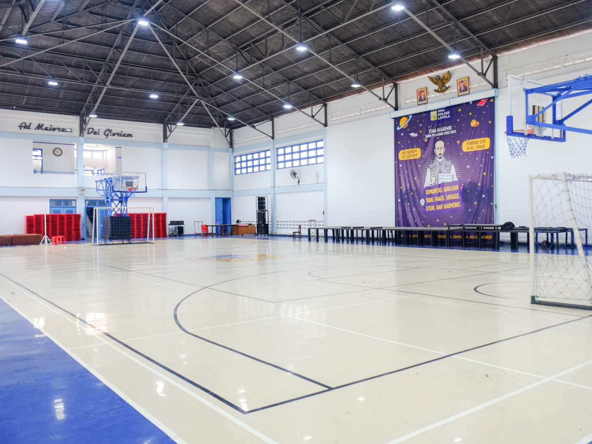
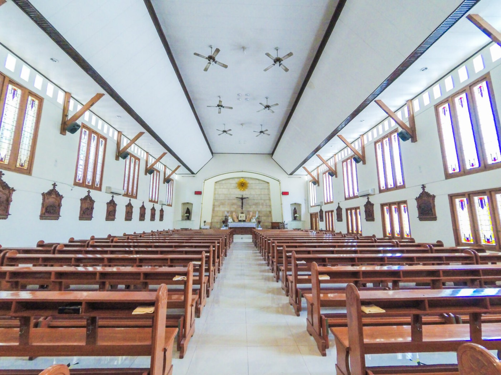
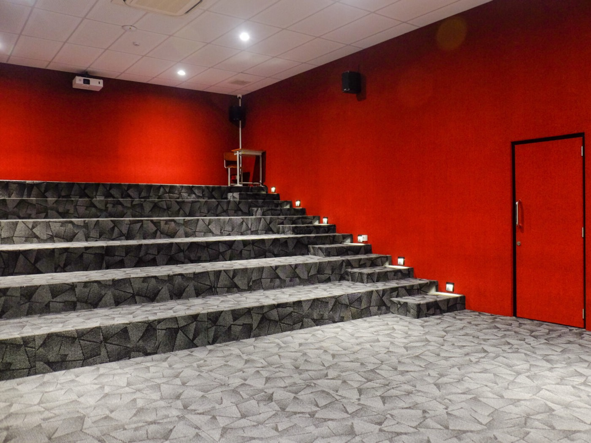
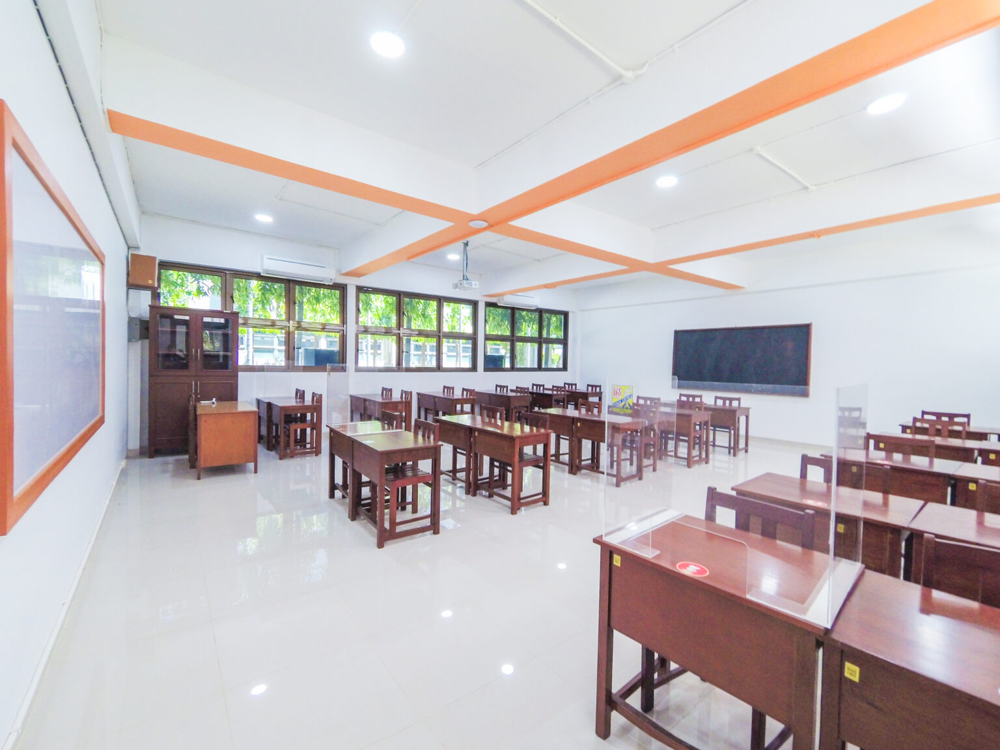

Fasilitas sekolah
Ruang untuk Bertumbuh
Tempat untuk belajar, berdoa, berkarya, dan bermain. Ini fasilitas yang bisa dinikmati siswa SMA Kolese Loyola setiap hari.


Gedung kebanggaan
Loyola Student Center
Gedung modern dengan atap runcing dan dinding kaca yang menjadi ikon baru Loyola. Sesuai namanya, gedung ini menjadi pusat kegiatan siswa.
Di depannya ada halaman rumput yang luas dan teduh, tempat siswa bisa berkumpul.
Lihat fotoGaleri fasilitas
Tempat belajar, berdoa, dan bermain
Pilih kategori untuk menyaring, lalu klik kartunya untuk melihat foto lebih besar.


Ibadah Kapel Loyola Tempat misa dan doa bersama, dengan bangku kayu panjang dan jendela kaca patri yang berwarna-warni. Olahraga Aula Belarminus Aula serbaguna dengan lapangan basket dan futsal di dalam ruangan, juga dipakai untuk acara besar sekolah. Belajar Laboratorium Kimia Tempat praktikum kimia dengan peralatan lengkap serta meja kerja yang bersih dan terang.



Multimedia Ruang Cinema Ruang menonton dengan tempat duduk bertingkat, proyektor, dan pengeras suara untuk pemutaran film maupun presentasi.

Belajar Ruang Kelas Kelas yang terang dan sejuk ber-AC, dilengkapi proyektor, papan tulis, dan meja kursi kayu. Santai
Kantin Gaudens Cor Café
Kantin yang ceria dengan beberapa stan makanan, tempat siswa makan dan berkumpul saat jam istirahat.
Santai
Kantin Gaudens Cor Café
Kantin yang ceria dengan beberapa stan makanan, tempat siswa makan dan berkumpul saat jam istirahat.
Masih ada lagi
Fasilitas pendukung lainnya
Selain yang di atas, Loyola juga punya fasilitas berikut untuk mendukung belajar, berolahraga, dan berkarya.
Laboratorium Biologi
Laboratorium Fisika
Laboratorium Komputer
Sport Center Edmund Campion
Lapangan Sepak Bola
Lapangan Basket dan Voli
Wall Climbing
Ruang Gamelan Soepra
Ruang Ekspresi
Taman Faber dan Taman Xaverius
Hidroponik Corner
UKS
Loker Penyimpanan
Ruang Gamelan Soepra
Ruang Ekspresi
Taman Faber dan Taman Xaverius
Hidroponik Corner
UKS
Loker Penyimpanan